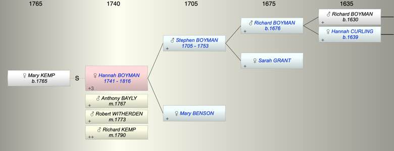

| [Index] |
| Hannah BOYMAN (1741 - 1816) |
|  |
| b. 1741 at St Lawrence |
| m. (1) 03 Nov 1767 Anthony BAYLY at Wapping |
| m. (2) 05 Oct 1773 Robert WITHERDEN at St Lawrence |
| m. (3) 26 May 1790 Richard KEMP at St Lawrence |
| d. 1816 at St Lawrence aged 75 |
| Parents: |
| Stephen BOYMAN (1705 - 1753) |
| Mary BENSON |
| Events in Hannah BOYMAN (1741 - 1816)'s life | |||||
| Date | Age | Event | Place | Notes | Src |
| 1741 | Hannah BOYMAN was born | St Lawrence | Note 1 | ||
| 1753 | 12 | Death of father Stephen BOYMAN (aged 48) | |||
| 03 Nov 1767 | 26 | Married Anthony BAYLY | Wapping | Note 2 | |
| 05 Oct 1773 | 32 | Married Robert WITHERDEN | St Lawrence | Note 3 | |
| 26 May 1790 | 49 | Married Richard KEMP | St Lawrence | Note 4 | |
| 1816 | 75 | Hannah BOYMAN died | St Lawrence | Note 5 | |
| Personal Notes: |
|
Source: Prerogative Court of Canterbury, National Archives TNA Ref.: PROB 11/1620/77
Submitted by Shelagh Mason In the Name of God Amen I Hannah Kemp of Ramsgat [Ramsgate] in the Parish of St. Lawrence in Thanet in the County of Kent being mindful of my mortality do this seventeenth day of June in the year of our Lord one thousand eight hundred and eleven make and publish this my last Will and Testament in manner following I give and bequeath unto my Husband Richard Kemp my dwelling house in Chapel Place in Ramsgate during his life Also I give and bequeath to my said Husband Richard Kemp the Interest of all monies in the public funds or elsewhere and all my Property during his natural life and at his death to be given as I here mention To Mrs. Elizabeth Guy of Ramsgate the Sum of twenty Pounds and to Mrs. Jane Carman twenty pounds to Mary Kemp twenty pounds and to my Brother Richard Boyman Two hundred pounds to my Niece Mary Burgh the interest of two hundred pounds in the four per Cents during her life and at her death to be divided equally to my Sisters Sarah Curling and Ann Boyman and to my Sister Holmans Children the part of theyre [their] Mothers my Nephew Stephen Holman to his Children and to my Nephew Francis Holman is part and if dead to his Children and to my Niece Ann Brown her part and if it should please God to take her to go to her Children I declaring [declare] this to be my last Will and Testament In Witness hereof I have set my hand this seventeenth day of June 1811 Hannah Kemp I have my Executor Robert Brown to sell the house if he thinks it proper And I here [make] Robert Brown Sole Executor of this my will and leave him twenty Pounds for his trouble Witnesses Mary Quince - Elizabeth Quince - Elizabeth Risington? Appeared personally Mary Kemp of Ramsgate in the County of Kent spinster and made Oath that she is the Daughter by a former marriage of Richd Kemp the Husband of Hannah Kemp late of Ramsgate aforesaid deceased that since the Marriage of her Father the said Richard Kemp with the said Hannah Kemp deceased this Deponent has generally resided with them that about five or six weeks previous to the death of the said deceased which happened on or about the eighteenth day of April 1816 she the said deceased requested this Deponent to take her the said deceased Will out of a drawer in her Bed Room in which the said Will was deposited and to keep the same in her custody that this Deponent accordingly took from the said drawer the said will of the said deceased being the very Paper writing hereunto annexed beginning thus “In the Name of God Amen I Hannah Kemp of Ramsgat” ending thus “this seventeenth day of June 1811” and thus subscribed “Hannah Kemp” That the said Will so continued in the possession of this Deponent until the day of the deceased’s death as aforesaid and she further maketh Oath that at the time the said Will was so delivered to her by the said deceased as aforesaid she then observed several erasures and interlineations therein and having carefully viewed the several erasures and interlineations now appearing in the said will as follows to wit the word “ten” on the thirteenth line of the first side of the said will and two words written over the same struck through with a Pen or erased and the word “twenty” interlined under the same the word “one” drawn thro’ with a pen on the fourteenth line of the same side and a word in like manner drawn thro’ over the same and the word “two” interlined under the same Also the words “the interest” interlined between the thirteenth and fourteenth lines of the same side also the name “Sarah” interlined between the fifteenth and sixteenth lines of the same side and the words “thayr Mothers” interlined between the seventeenth and eighteenth lines of the same side also the greater part of the last line of the same side to be erased and the words “her to go to her Children” between that and the proceeding line and having also inserted the following words written after the signature of her the said Sarah Kemp * to the said Will “I have my Executor Robert Brown to sell the house if he thinks it proper And I here [make] Robert Brown Sole Executor of this my will and leave him twenty Pounds for his trouble” * This should, of course read “Hannah Kemp”, not Sarah, as show above. this Deponent truly believes the said will is now in all respects in the same plight and condition as when the same was delivered to her by the said Hannah Kemp deceased as hereinbefore mentioned as the said Mary Kemp further made Oath that she has frequently seen the deceased write and is thereby become well acquainted with her manner and character of hand writing and she verily believes the whole body and contents of the said will and the several interlineations therein to be all of the proper hand writing of the said Hannah Kemp deceased Mary Kemp On the fourth day of September one thousand eight hundred and seventeen the said Mary Kemp was duly sworn to the truth of this Affidavit by virtue of the annexed Commission before me R. Harvey Commissioner in the presence of Fras. Cobb Austen Notr Pub. [Notary Public] On the 19th day of August 1810 Appeared Personally Richard Harvey the Elder of Ramsgate in the Isle of Thanet in the County of Kent Clark and Mary Dowland of Ramsgate aforesaid Widow and made Oath that they were acquainted with Hannah Kemp wife of Richard Kemp late of Ramsgate in the County of Kent deceased and during such their acquaintance with the said deceased have frequently seen her write and also subscribe her name to writings and are thereby become well acquainted with her manner and character of handwriting and subscription and having now carefully viewed and perused the Paper writing hereto annexed purporting to contain the last Will and Testament of the said deceased beginning thus “In the Name of God Amen I Hannah Kemp” ending thus “this seventeenth day of June 1811” and thus subscribed “Hannah Kemp” and referring now particularly to the several erasures and interlineations now appearing on the said Will as follows to wit the word “ten” on the thirteenth line of the first side of the said will and two words written over the same struck through with a Pen or erased and the word “twenty” interlined under the same the word “one” drawn thro’ with a pen on the fourteenth line of the same side and a word in like manner drawn thro’ over the same and the word “two” interlined under the same Also the words “the interest” interlined between the thirteenth and fourteenth lines of the same side also the name “Sarah” interlined between the fifteenth and sixteenth lines of the same side and the words “thayr Mothers” interlined between the seventeenth and eighteenth lines of the same side also the greater part of the last line of the same side to be erased and the words “her to go to her Children” between that and the proceeding line and having also inserted the following words written after the signature of her the said Sarah Kemp * to the said Will “I have my Executor Robert Brown to sell the house if he thinks it proper” * This should, of course read “Hannah Kemp”, not Sarah, as show above. And also observed the following words written on the margin opposite to the aforesaid signature “ and I make Robert Brown sole Executor of this my will and leave him Twenty pounds for his trouble” The Deponents say they verily believe the whole body and contents of the said will and the several interlineations therein together with the subscription to the said will to be all of the proper handwriting and subscription of the said Hannah Kemp deceased R Harvey Mary Dowland On the nineteenth day of August one thousand eight hundrd and nineteen the said Richard Harvey the Elder and Mary Dowland were duly sworn to the truth of this Affidavit by virtue of the annexed Commission before me R. Harvey Junr Commissioner In the presence of Edward Daniel N.P. [Notary Public] Proved at London 6th September 1819 before the Worshipful John Danbery Doctor of Laws and Surrogate by the Oath of Robert Brown Esq. the sole Executor to whom Admon. [Administration] was granted limited so far only as concerns all the Right Title and Interest of the Deceased in and to the Sums of £400 – 4 per cent Consolidated Bank Annuities and £300 3 per cent reduced Bank Annuities which by virtue of certain Articles of Agreement bearing date 22nd May 1790 the said Deceased had a right to dispose of and grow due thereon and all benefit and advantage to be had received and taken therefrom But no further or otherwise in any other manner whatsoever bying [being!] first sworn duly to administer Notes: Richard Kemp, Widower, married Hannah Witherden, Widow, by Licence on 26th May 1790 at St. Lawrence. Hannah was previously married to Robert Witherden 5th October 1773 and listed as a widow then, too. Richard Kemp dies and is buried at St. Lawrence on 19th January 1820 aged 83 (giving a birth date of 1737 + a couple of years), and is listed as being “of Ramsgate”. Hannah Kemp pre- deceases Richard and died and was buried on 24th April 1816 aged 75 at St. Lawrence, and is given as “of Ramsgate”, giving a birth date of approx. 1741. Hannah Boyman was christened 26th March 1741, d. of Stephen and Mary Boyman at St. Lawrence. Richard Kemp had previously married Mary Hooper (Bachelor & Spinster, both otp.) on 17th January 1765 at St. Lawrence. They had a daughter Mary Kemp christened there 15th December 1765, who appears to be their only child. Mary Kemp (the mother) dies and is buried on 17th September 1789 aged 60, given as “Wife of Richard” in the parish register. This gives a birth date of approx. 1729 for Mary. Transcribed by Shelagh Mason 21st August 2018. All rights waived for personal use – BUT please quote source and reference. |
| Created on a Mac™ using iFamily for Mac™ on 8 Oct 2023 |